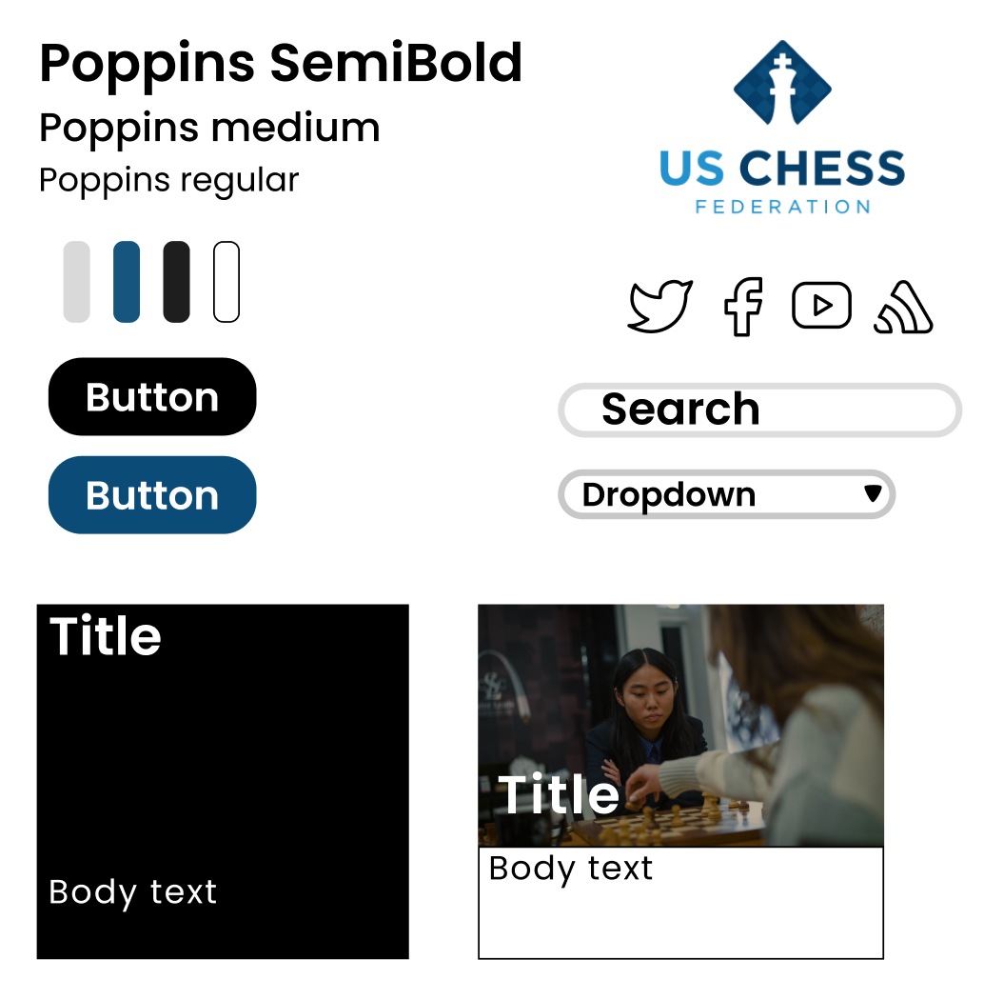

Competitive chess has been a hobby of mine since middle school, and the USCF is the national organization
for chess tournaments. I saw that their site had recently been remade but still had several issues, so I
thought it would be interesting to try and redesign their website in a better way.
I identified a few major issues with the website below:
Small text
Small images
Disorganized banner and logos
Poor use of space
Cluttered navigation links
Inconsistencies in links
Above is an image of the website that shows some of these issues.
More problems with accessibility were found with the help of WebAIM WAVE, a tool to assess the accessibility of websites.
The blue text has a low contrast with the background and could be detrimental to people with visual impairments. Several of the images do not have alternative text.
All the links on the page do not contain text. There are also redundant links on the stories featured on the page.
For the most part, I don’t think the links not containing text are a problem, since they work and look fine. I agree that the low contrast text could be fixed.
Lo-fi Prototyping
Visual Design Guide

I kept many of the same colors on the website while redesigning the article look with two different kinds of cards.
The dropdown, search, and buttons now follow similar similar designs.
Hi-fi Prototyping
Desktop View
Tablet View
Mobile View
Responsible Redesign
Using the hi-fi prototype as reference, I recreated the new design using HTML and CSS.
However, due to how the column system works in Bootstrap, I wasn't able to recreate the
prototype completely accurately. Nonetheless, this version is easier to read and makes
the most out of the given space.
Check out the website here!